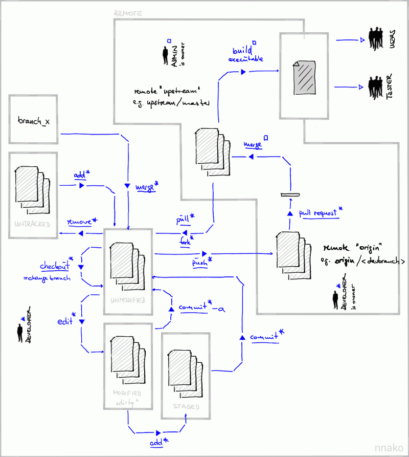

- Quickstart Guide
- Installation / Configuration
- Initial checkout ("clone")
- Working with branches
- Overview of structure and commands
- Command sequence and basic steps
- Step 1: checkout parent branch
- Step 2: create your local branch
- Step 3: Work locally on your branch
- Step 4: First push from your new local branch to the repository
- Step 5: Development cycles
- Step 6: Merge your development into master
- How to's
Freeplane uses a distributed revision control system named git. Use this instead of the source packages that are contained in the releases if you plan to take up coding.
This is a guide to Working with freeplane's git repository. The first part covers the commands you need the most, while the second part ("How to's") adds some commands for special tasks such as undoing commits or reverting files (currently there is some redundancy between the two which we will remove soon).
At least one Freeplane developer learned to use git with the help of an excellent German Open Source Press book on git.
You can (and probably want to) use eclipse for most operations. We try to explain this in each section, but it is a good idea to read the EGit documentation. Some operations, such as creating remote branches should be applied with the command line only (e.g. for publishing branches: in order to make sure that tracking branches are setup correctly).
There is a fun Google Tech Talk by Linus Torvalds on git and a excellent introductory Git talk by Jessica Kerr.
Quickstart Guide
This section is meant to be as brief as possible while still explaining the necessary commands a bit so that you understand what you are doing.
Installation / Configuration
Install git as described here.
You probably want to use the latest Eclipse (make sure to get Eclipse for RCP and RAP Developers) with the EGit (Eclipse-git) plugin that is part of recent Eclipse builds. Although EGit comes with its own pure java git implementation JGit, we rely on a native git for some commands, so please install git as described above, too.
After Git installation, you need to start Git Bash and run the following command line which first set the author details globally (which will be recorded for each changeset):
$ git config --global user.name "<Firstname> <Lastname>"
$ git config --global user.email "<email address>"
Initial checkout ("clone")
Solution 1: with Git Bash
Create a new directory named 'git' for git repositories:
$ cd $HOME
$ mkdir git
$ cd git
Create a local copy of the (whole!) git repository for Freeplane by cloning (git-speak for "checking out"):
$ git clone https://github.com/freeplane/freeplane.git
This will take 3-20 minutes depending on your network connection.
Now you can quit Git console:
$ exit
A local copy of the complete history and all branches has been created. Therefore it is possible to develop and make commits offline and only connect for the purpose of getting changes from other devs (pull) or sending your commits to a remote branch (push).
Continue with Post-checkout operations below!
Solution 2 : with Eclipse/EGit
you can clone the repository as follows
-
open the Java Perspective
-
open the Git Repositories View (Window>Show View->Other...->Git->Git Repositories)
-
select the Clone a Git repository option with the URL: https://github.com/freeplane/freeplane.git
-
enter credentials, choose all branches (!), accept the defaults or choose a different directory location (for the local copy of the repo), then check import all existing projects after clone finishes, hit Finish and be patient (should take <10 minutes)
-
NOTE:: import all existing projects after clone finishes is not needed when using gradle
-
If you already have cloned the repository just import the projects to eclipse and execute Team->Share project->Git->Use or create repository in parent folder of project
-
Enable following renames in history views. By default history view does not follow changes resulting from renaming of classes or packages and moving of java classes to other packages. These features should be activated as follows:
- In Eclipse main menu: Window -> Preferences -> Team -> Git -> History, here you should enable option "Follow Renames"
- Using the command line set git option diff.renameLimit to some big number so that commits with big number of changes are properly processed either for the cloned repository or as a global setting:
$ git config diff.renameLimit 100000
You can change the both settings also from git configuration dialog under eclipse preferences.
Enable Git keyboard shortcuts. Funnily enough you have to give Git shortcuts some blessing before they work, see this Stackoverflow answer.
Working with branches
Overview of structure and commands
Below, you see the a general structure of branches as they are proposed for any Freeplane developer to use. The remote branch origin/master is the global master branch for any development aiming a release in an official version. Each developer may fork his own origin/

LEGEND
- locations of branches and persons are depicted in BLACK,
- possible activities are shown in BLUE text.
- Each activity marked wirh a "star" can be performed by the code developer,
- the "boxed" activities are performed by the admins.
- UNDERLINED activities accord to GIT commands,
- PLAIN activities describe ordinary tasks (e.g. for modification or building of code).
The main branch which was termed trunk in BAZAAR, is termed master in GIT. It holds all the Freeplane sources. For the Docear main branch, we use docear/trunk. New (feature) branches should always be named
Command sequence and basic steps
Here are the basic commands for working with branches. The diagram is given just as an overview, read the step descriptions in the following sections before trying any git commands.

- The remote repository is cloned from origin (sourceforge). You now have a complete local copy of the repository including all branches and the complete history.
- The user creates (and checks out) a new local branch user/newdev1.
- This branch is created on the remote side too (pushed, with -u to setup the tracking correctly).
- After some development on that branch, you want to integrate this with changes in master. This is done by pulling from the remote master branch on origin.
- After having checked the merge (pull = fetch + merge), you push the integrated user/newdev1 branch to its remote counterpart.
- You are done with development on user/newdev1. In order to merge your changes into master, you switch to the master branch (git checkout master) and update it (git pull).
- The local user/newdev branch is merged into the local master branch.
- After having checked the result of the merge, it is pushed to the remote master branch.
In the following, development steps which roughly correspond to the commands above are described.
Step 1: checkout parent branch
Find and checkout original source branch 'branchname (the branch you want to base your work on, usually master) to the local work space.
If your parent branch is not the master you should select it first
- Using command line git:
# fetches the remote (tracking) branch (not necessary if you just cloned the repo)
$ git pull
# switch to **branchname**
$ git checkout <branchname>
- Using Eclipse/EGit,
- Team->fetch from upstream fetches all remote branches (may not be necessary)
- Team->Switch To->New branch..., select Source ref = refs/remotes/origin/
, merge and checkout new branch
Step 2: create your local branch
Create + check out your own local branch based on the original branch:
Since branches are really really cheap in git, it makes sense to create a branch
for most development tasks (especially if you want a review before you integrate into master!).
The following command creates a new local branch
$ git checkout -b <devbranch>
Step 3: Work locally on your branch
Please read chapter 2.2 of the official git book in order to get started with working with git locally. You should understand how to stage and commit changes. Here are some basic steps:
- modify/add files...
- add the modifications to the index:
$ git add foo.java # (**Team->Add to index** in eclipse)
- create a commit from the changes in the index:
$ git commit [-m message] # (**Team->Commit** in eclipse)
(if you omit -m then you will be prompted for a commit message)
- create more commits, this is all done locally!
- look at the commit graph:
$ git log # might want to use **gitk** as a graphical tool
Eclipse git is also able to do the local commits from the team menu
Step 4: First push from your new local branch to the repository
Setup git so that only the current "upstream" branch gets pulled/pushed (instead of pushing all branches that have an upstream tracking branch which can be confusing!):
$ git config push.default tracking
Note: this option is ignored by current EGit. On EGit you get the same behavior by selecting Team->Push To Upstream.
Publish ("push") your branch (including the commits you made) so that others can see (and review!) it.
NOTE: Run every push command with --dry-run first!!
Currently it's best to do this on the command line, because push -u sets up the tracking branch properly. Make sure you use the same name! Use --dry-run first.
$ <go to the local copy of the repo ("$ cd $HOME/git/freeplane")>
$ git push -u origin <devbranch> [--dry-run]
You should see a message like:
Branch user/dev1 set up to track remote branch user/dev1 from origin.
(When pushing from eclipse you have to configure the remote tracking branch manually!). In any case (tracking branch configured automatically or manually), Team->Push to Upstream will push the current branch to its (configured) remote branch on origin.
Step 5: Development cycles
Follow the cycle: Switch to the right branch (may not be necessary)
$ git checkout <devbranch> # **Team->Switch To->user/dev1** from EGit
pull other people's changes on your devbranch (as a beginner you might want to do this on a copy of your repository first, it's all local!)
$ git pull # **Team->Pull** from EGit
(People recommend to use git fetch and git merge instead of git pull)
you might have to resolve conflicts: (might want to use 'git mergetool' or Eclipse/EGit ) git will place <<<<<<<<<< and >>>>>>>>>> comments to show the locations of the conflict(s)
for each conflict x:
- resolve conflict in x, remove markers
- git add x # mark x as resolved
to undo the merge you can use
$ git reset --hard # **Team->Reset...** in EGit
but this will throw away all uncommitted changes(!)
- commit the conflict resolution(s):
$ git commit [-m message] # **Team->Commit** in EGit
- create local commits (see "Step 3")
- merge changes from master (to integrate the latest code into your feature and to make Step 6 easier)
$ git pull origin master
- merge changes from master with EGit:
- Team->Fetch from Upstream
- Team->Merge..., select origin/master
- push the result of the merge with master to your remote dev branch (always run git push with --dry-run first!)
$ git push [--dry-run] # EGit: **Team->Push to Upstream**
# (same as **git push origin <devbranch>** because tracking is set up)
Step 6: Merge your development into master
When you are done with your branch, and you have completed a code review of your dev branch, it should be merged into master (!) As a new developer, you must let a more experienced developer do this!
$ git checkout <devbranch> # Switch to <devbranch> in EGit
$ git pull # **Team->Pull** in EGit
$ git checkout master # Switch to **master** in EGit
$ git pull # **Team->Pull** in EGit
$ git merge <devbranch> # EGit: **Team->Merge...**, select **local** <devbranch>
$ git push [--dry-run] # EGit: **Team->Push to Upstream**
# (same as **git push origin master** because tracking is set up)
How to's
This section contains useful information for working with git, including stuff like checking that tracking branches are set up correctly, details about working with branches, undoing commits/reverting files, and a bit more.
Checkout in more detail
Checking out is termed cloning in git speak:
$ cd ~
$ mkdir git
$ cd git
$ git clone https://github.com/freeplane/freeplane.git freeplane
If you want/have read-only access, use this as the last command:
$ git clone git://github.com/freeplane/freeplane.git freeplane
However, this will only configure the master branch (named trunk in other VCS's such as svn) locally:
$ git branch -a
* master
remotes/origin/HEAD -> origin/master
remotes/origin/docear/trunk
remotes/origin/master
In order to check out a branch (which is simply a reference to a commit)
that currently only exists remotely (the remotes/origin/* references are
called remote tracking branches), simply switch to that branch:
$ git checkout docear/trunk
This can be done more easily using Eclipse. This page also describes how to import a repository into eclipse.
Using Tags
Show all tags:
$ git tag
Search for a tag:
$ git tag -l "release-1.1*"
Show information about a tag:
$ git show release-1.1.2
Define a tag locally:
$ git tag -a <tagname>
# (an editor opens for you to add a description)
Tags are not automatically transferred when doing a git push,
you have to push individually:
$ git push origin <tagname>
or push all tags:
$ git push --tags origin
You might need a
$ git pull --tags
to get all tags. See git-fetch(1) for situations when you will need this (rarely).
TODO: sign tags?
Working with branches
Branches are very central to git. Do not hesitate to create feature, team and (of course) maintenance branches.
You probably want set push.default to tracking or upstream which makes sure that only the current branch is pushed to its upstream branch (and NOT all configured branches): Note: this option is ignored by current EGit. On EGit you get the same behavior by selecting Team->Push To Upstream.
$ git config push.default tracking
(you can equivalently set this to upstream in recent git versions).
Switch to another branch
$ git checkout <branchname>
(Team->Switch To->... in Eclipse)
How to create a new branch
New (feature) branches should be named
# commit everything that should go into the new branch
$ git status
$ git add <file>
[...]
$ git commit -m "my changes"
# create new branch locally
$ git checkout -b <newbranch>
# check commit log to see that above commit is in there
$ git log
# new branch must be visible and selected:
$ git branch -a
# (make sure that the name of the new branch is correct! it is diffcult/impossible
# to rename published branches!)
# create branch remotely, use -u to automatically configure upstream location
$ git push -u origin <newbranch>
# this should output something like this:
**Branch <newbranch> set up to track remote branch <newbranch> from origin.**
# (**'Note**': -u is important if you want to use git pull/push without
specifying a remote/refspec)
# remote branch of <newbranch> must be visible:
$ git branch -a
So the short story is:
$ git checkout -b <newbranch>
$ git push -u origin <newbranch>
Rename a local branch
$ git branch -m <old-branch-name> <new-branch-name>
TODO: how to rename the remote tracking branch => difficult!!
How to merge local branches
$ git checkout <destination_branch>
$ git merge <source_branch>
If you want to abort a merge (revert the working directory to the state before the merge command), do this:
$ git reset --hard
(WARNING: this will remove all uncommitted changes!!)
In eclipse, this can be achieved by:
- Team->Switch To and choose <destination_branch>
- Team->Merge... and choose <source_branch>
In Eclipse, you may have to refresh all projects (F5) if a branch has been added/modified/deleted via the command line.
Fast-Forward Merges (merge-nodes)
Often the creation of a merge commit (merge node) is not necessary,
and git merge uses a fast-forward merge, omitting
the merge node:
$ git merge foo
Updating 9e9a63a..732b657
Fast-forward
testfoo.txt | 1 +
1 file changed, 1 insertion(+)
create mode 100644 testfoo.txt
results in:
* 732b657 commit in branch foo
* [...]
Using the option --no-ff you can force git to create a merge
node even if isn't absolutely necessary (non-fast-forward merge):
$ git merge --no-ff foo2
Merge made by the 'recursive' strategy.
testfoo2.txt | 1 +
1 file changed, 1 insertion(+)
create mode 100644 testfoo2.txt
which will result in:
* 3890bc8 (HEAD, master) Merge branch 'foo2'
|\
| * 6bc24c5 (foo2) commit on foo2
|/
*
* [...]
This is useful when merging feature branches because it clearly shows the integration of a new feature. On the other hand, many merge nodes make the commit graph less readable.
Merge master->dev-branch locally
$ git checkout <devbranch>
$ git merge master
Merge dev-branch->master locally
$ git checkout master
$ git merge <devbranch>
How to remove a branch
# remove branch locally
# (use -D instead if you want to delete a branch that is not fully merged into HEAD!)
$ git branch -d <branchname>
You can do this with EGit using Team->Advanced->Delete Branch....
If you accidentally deleted a (local) branch, you can recover it by
starting a new branch from the location that git branch -d
echoed (or by searching for the last commit on that branch in git reflog):
$ git branch -D foo
Deleted branch foo (was 732b657).
$ git branch foo 732b657
(remember that branches are simply pointers to commits)
Warning: this only works if the delete was quite recent as orphaned commits will be deleted after some time!
Delete a remote branch(!):
$ git push origin --delete <branchname>
Now the local and the remote tracking branch should be gone:
$ git branch -a
docear/trunk
* master
remotes/origin/docear/trunk
remotes/origin/master
NOTE: The stale branch will still exist in other checkouts, until you do a:
$ git remote prune origin
in that other checkout. TODO: but it still exists there as a local branch!
Check whether your branches are set up correctly
Make sure your branches are set up correctly for push/pull:
$ git remote show origin
* remote origin
Fetch URL: https://github.com/freeplane/freeplane.git
Push URL: https://github.com/freeplane/freeplane.git
HEAD branch: master
Remote branches:
docear/trunk tracked
master tracked
Local branches configured for 'git pull':
docear/trunk merges with remote docear/trunk
master merges with remote master
Local refs configured for 'git push':
docear/trunk pushes to docear/trunk (up to date)
master pushes to master (up to date)
Importing a remote branch
Using command line git:
$ git pull # fetches the remote (tracking) branch
$ git checkout <branchname>
Using Eclipse/EGit:
- Team->Pull fetches the remote (tracking) branch
- Team->Switch To->New branch..., select Source ref = refs/remotes/origin/
General workflow
Create a dev branch (see section on creating branches above).
Work on your feature branch
# switch to feature branch
$ git checkout <feature>
# fetch and merge changes (in case another dev works on this)
$ git pull
# you might have to resolve conflicts: (might want to use 'git mergetool'
# or [http://wiki.eclipse.org/EGit/User_Guide#Resolving_a_merge_conflict Eclipse/EGit])
for each conflict x:
1. resolve conflict in x, remove markers
2. git add x # mark as resolved
# commit the conflict resolution(s)
$ git commit
$ git add ...
$ git commit
[...]
# This will push commits to the remote branch that is tracked
# make sure that push.default=tracking|upstream (see above),
# otherwise other branches will be pushed as well!
$ git push [--dry-run]
Merging
Merge master ->
After a final code review (on your dev branch), merge
Miscellaneous
Revert (reset) files
git checkout <filename>
In EGit do this: Right-click on file -> Replace With -> HEAD Revision
Revert all files in working copy (!):
git reset --hard
Undoing/editing commits
TODO: how to remove/edit a commit locally using rebase.
Undoing a commit that is already pushed
Use git revert , like this:
$ git revert b1e9b4c9755b091f95aaa3035aca04dcb02ec1fd
This will generate an inverse commit, it will not remove the original commit:
* 171881e (HEAD, master) Revert "a simple commit"
* b1e9b4c a simple commit
Avoid entering passwords on each commit
At least if you use the command line git interface you should consider to deposit your public ssh key at github. See the section about ssh configuration on github.